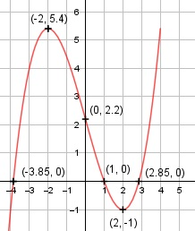

Aufgabe 21 f(x) = 0,2x3 - 2,4x + 2,2 f'(x) = 0,6x2 - 2,4, f''(x) = 1,2x, f'''(x) = 1,2 Definitionsbereich: -∞ < x < ∞ Wertebereich: -∞ < f(x) < ∞ Asymptoten: - Symmetrie: - Nullstellen: 0,2x3 - 2,4x + 2,2 = 0 Horner-Schema: x = 1 durch Probieren ermittelt. 0,2 0 - 2,4 2,2 x1 = 1 0,2 0,2 -2,2 ------------------------------ 0,2 0,2 -2,2 0 0,2x2 + 0,2x - 2,2 = 0 |:0,2 x2 + x - 11 = 0 oder Polynomdivision: 0,2x3 - 2,4x + 2,2 : (x-1) = 0,2x2 + 0,2x - 2,2 -(0,2x3 - 0,2x2) ----------------- 0,2x2 - 2,4x + 2,2 -(0,2x2 - 0,2x) --------------- -2,2x + 2,2 -(-2,2x + 2,2) --------------- 0 p, q - Formel: p = 1, q = -11 x2,3 = x2,3 = -0,5 ± x2,3 = -0,5 ± x2,3 = - 0,5 ± 3,35 x2 = 2,85 x3 = -3,85 N1(1|0), N2(2,85|0), N3(-3,85|0) Schnittpunkt mit der y-Achse: f(0) = 0,2 * 03 - 2,4 * 0 + 2,2 Sy(0|2,2) Extrempunkte: 0,6x2 - 2,4 = 0 |+2,4 0,6x2 = 2,4 |:6 x2 = 4 x1,2 = ± 2, f(2) = 0,2 * 23 - 2,4 * 2 + 2,2 = -1 f(-2) = 0,2 * (-2)3 - 2,4 * (-2,2) + 2,2 = 5,4 f''(2) = 1,2 * 2 = 2,4 > 0 --> Tiefpunkt (2|-1) f''(-2) = 1,2 * - 2 = -2,4 < 0 --> Hochpunkt (-2|5,4) Wendepunkte: 12x = 0 |:12 x = 0, f'''(0) ≠ 0 --> Wendepunkt (0|2,2) Graph:
